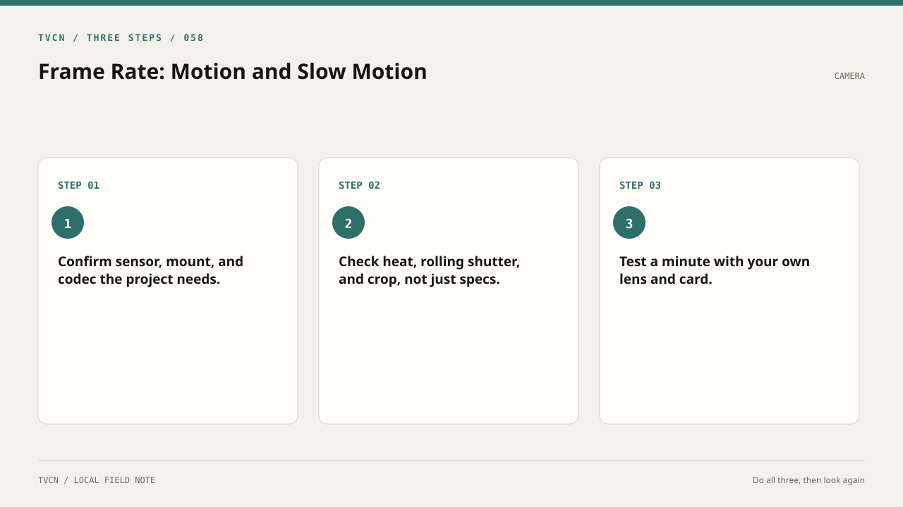

Set the project rate before slow motion
Project frame rate drives sound, captions and platform compatibility; slow motion is a capture rate. 24/25/30 is the narrative base, 60/120 for later slowdown. Do not mix base rates in one project.
Choose capture rate by the slowdown: 2x needs 48/50/60; 4x needs 96/100/120.
Limits
High frame rate is not more cinematic. It makes action too smooth and weightless; narrative usually stays at 24/25, with slow motion only where needed.
On set
Shoot 25p for a 25p project. For a two-times slow motion, shoot 50p at 1/100 shutter and play back to check for flicker.
Three-step flow

Do this
Frame rate decides how action feels in time. High-speed is not “slow”; it lets the audience see one instant. Decide the timeline and slow-motion factor before rolling.
- Shoot 25p for a 25p project; keep footage and timeline matched.
- For two-times slow motion, shoot 50p at 1/100 shutter.
- Review for flicker and decide which second the slow-motion beat belongs to.
Avoid
Do not treat high-speed as a post slap-on; decide at the shoot, because stretching later stutters.
Image note. Covers, diagrams and step images on this page are editorial illustrations or structure diagrams, not photographs of a test performed here; they are not evidence of measured gear performance. Where an image is AI-assisted, the caption says so. Read the test conditions in the text before treating an image as proof.